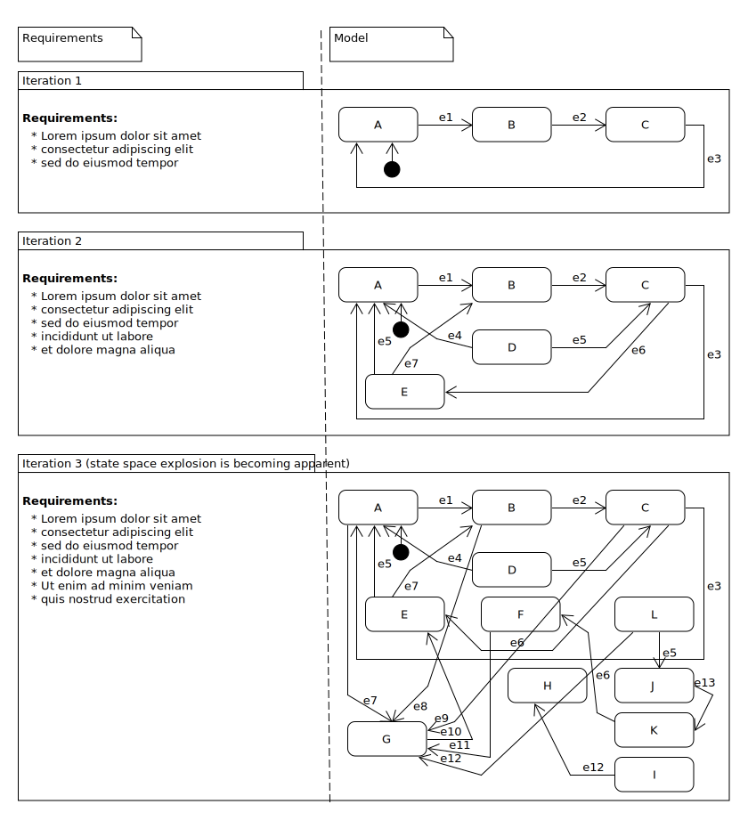

Decisions without actions are pointless. Actions without decisions are reckless.
—John Boyd
Introduction#
Problem - The Tale of Two Architectural Explosion Chambers#
Engineers like to describe their software with pictures. Often these pictures look like a bunch of blocks connected by arrows. The blocks represent the different system states and the arrows represent the things which cause change. Pictures drawn like this are called finite state machines (FSMs).

Generally speaking if you follow some rules while you draw your picture, that drawing technique is called a formalism.
The FSM formalism is an architectural time bomb. The number of blocks and arrows needed to model a simple system is modest and understandable. But there is an exponential relationship between the number of blocks and arrows and the system’s requirements. As your requirements increase overtime, your drawing will quickly become a complex monstrosity. This effect is so dramatic, it has been given the name: “state-space-explosion”.
It follows then, that any useful engineering formalism should compress complexity within the model, not make your model more complex than the real system.

In 1987 an applied mathematician, David Harel neatly solved “state space explosions” by inventing some new drawing rules. He named these drawing rules: “hierarchical state machines” (HSMs) and “parallel regions”. A HSM allows for blocks to be drawn within blocks; an inner block containing all of the behavior described by an outer block. A parallel region, is represented as a dashed line within a state’s block. Each side of the dashed line defines a region and a region describes a concurrent operation. A diagram describing an HSM with or without parallel regions is called a statechart.
David Harel’s drawing rules ensnare tremendous amounts of complexity. An HSM contains the rules of an FSM within it, so an FSM can be refactored into an HSM as your design progresses.

If you model systems using his techniques you will end up with small and intuitive diagrams which can easily adapt to future requirements.
When state machines are running in parallel regions they are running at the same time: both regions react to the events which are sent to the statechart. This means that your statemachine can have more than one active state. Such an idea is easy for a theorist to envision, but it is much harder for the practitioner to implement. Regions can exist within regions, and each region represents a parallel execution of code, with access to common outer memory and a need to react to events managed by other parts of the program. It is like applying topology to your system forks.
In the 1990s a number of firms offered proprietary statechart picture/compiler programs. But if you pay for a compiler and the computer language you are using only works with one vendor’s technology, that vendor has an incentive to keep their prices low, wait for you to get profitable, then jack their prices and extract a rent from your firm. This is called vendor-lock-in.
In the year 2000, Miro Samek liberated statecharts from vendor-lock-in with his paper titled State-Oriented Programming. His algorithm supported the block within block part of the statemachine picture, but it did not support the dashed line: parallel regions. He went about addressing the “concurrency problem” in a different way, he invented the orthogonal component pattern: an HSM running within another HSM (HHSM).
Not only did Miro Samek describe how to write a statechart’s event processing engine, he provided the C and C++ code to do it. He wrote books to support these code bases: Practical Statecharts in C/C++: Quantum Programming for Embedded Systems and Practical UML Statecharts in C/C++: Event-Driven Programming for Embedded Systems (one of the best computer books I have ever read).
Since the event processor was written in C/C++ a firm’s statechart designs became completely free from vendor-lock-in, since compiler’s had already become open source by that time. The library itself was written in such a way that you could draw a picture in Umlet, then translate the drawing into your C/C++ code without a lot of effort.
Both David Harel and Miro Samek went about containing the architectural “state space explosion” caused by FSMs. One method was practical from an implementation perspective and the other was more pictorially expressive in how it described concurrency.
At some point an industry standard was established for mapping statechart pictures into XML: SCXML. The idea being that you could move your XML between statechart engines, or send serialized specifications of behavior over the wire.
This project is about having cake and eating it too. The library this project is dependent upon uses Miro Samek’s algorithm and thereby doesn’t implicitly support parallel regions, but it does support the orthogonal component pattern. So I will use the orthogonal component as a kind of assembly language. To specify how a statechart should be drawn, I will implement an XML to statechart parser to do this I will use a subset of the SCXML standard.
To summarize: this library is about bringing parallel regions to the Miro Samek algorithm. The drawing rule to make these HHSMs will just be those described by David Harel, and yet the code will follow the Miro Samek philosophy of being comprehensible and accessible. There will be no picture drawing tool, instead the library will consume XML, which could easily be written by a picture drawing tool if someone wanted to write one.